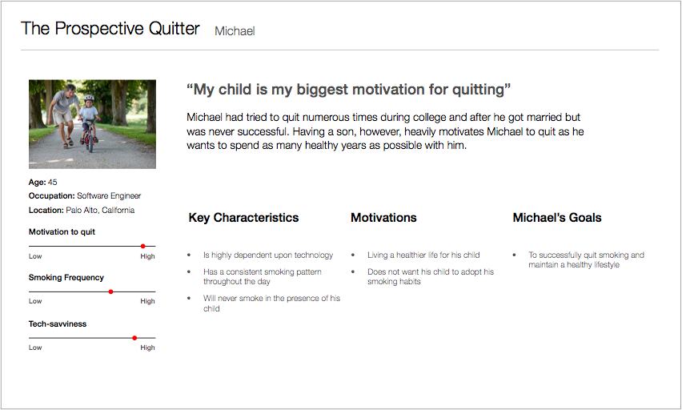
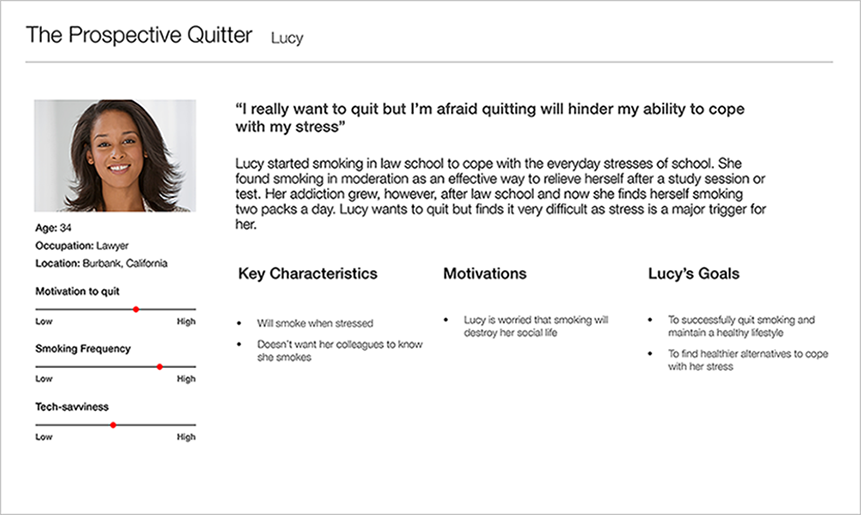
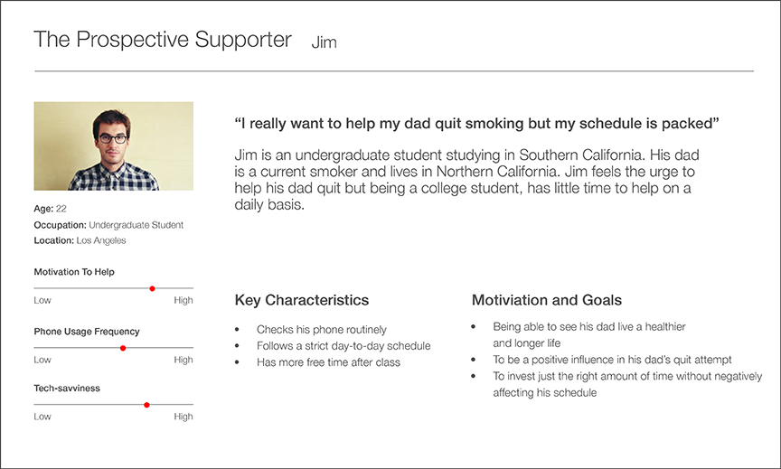
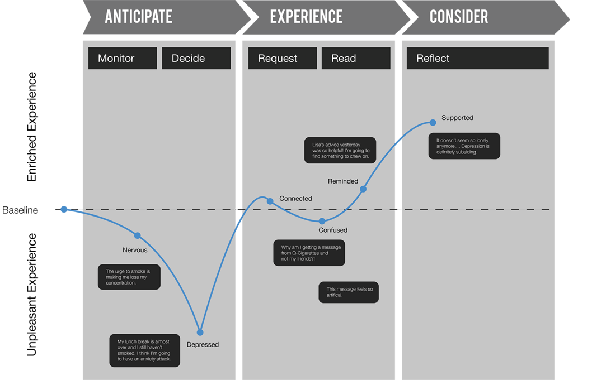
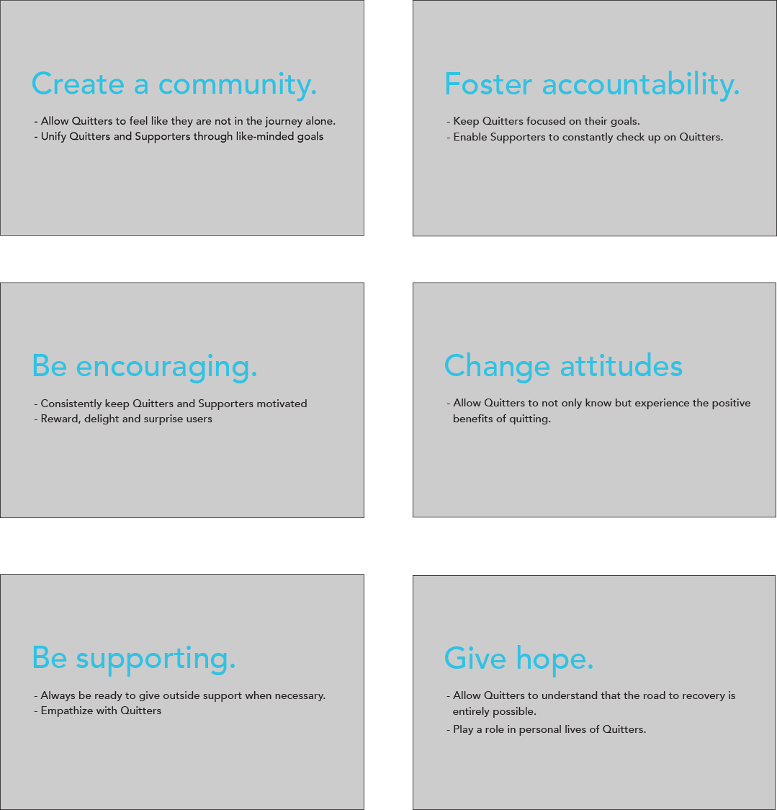
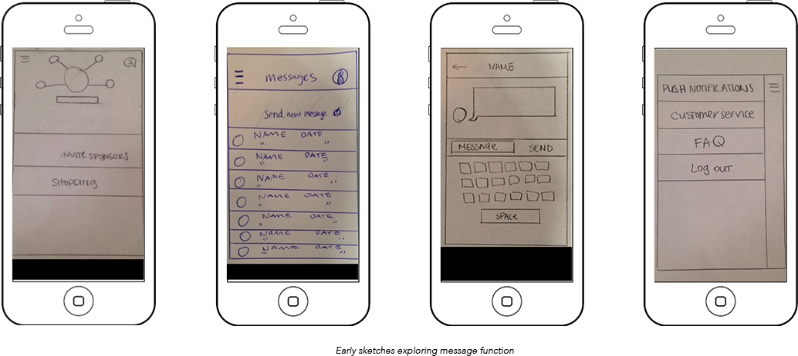
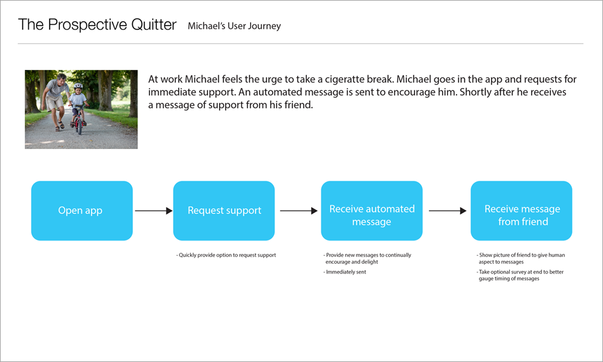
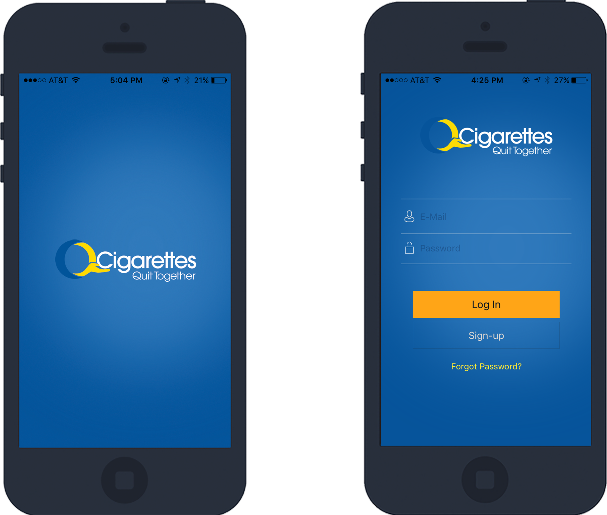
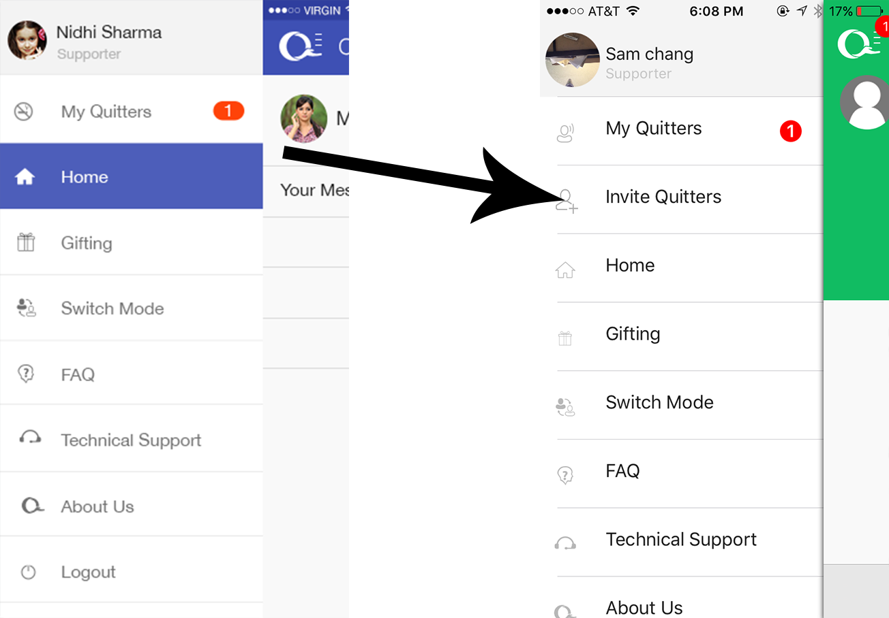
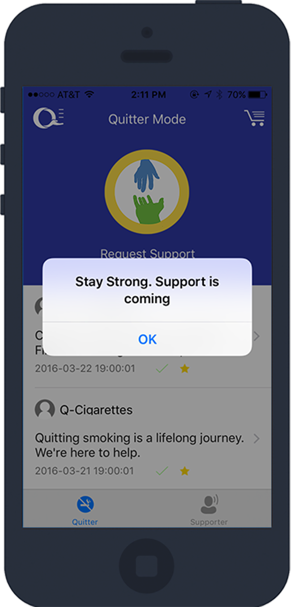

This is the story of how I helped define and create the user experience for an emerging smoking cessation app.
OVERVIEW
I joined the Q-Cigarettes App Development team to help develop the Q-Cigarettes App, a mobile app that combines peer support as well as counseling to help smokers quit. This app also empowers health professionals by giving them unique methods of nicotine replacement therapy for their patients.
PROJECT DURATION
This project took place between April 2015 and April 2016. This was the first project I took on as a User Experience Designer.
MY ROLE
I was part of a small team alongside fellow UX/UI designer, Avijit Chinara, who worked remotely from India. During the inception of this project I primarily participated in the ideation phase and created the initial wireframes and user flow diagram.
I then assisted Avijit by providing feedback and iterating user flow diagrams, wireframes and mockups. I was able to then lead the UX design work towards the middle to the end of the project and was also responsible for the visual design and branding of the app.
THE CHALLENGE
I was approached by the CEO of Q-Cigarettes during a UX meeting held at the University of Southern California to work on the app. The app was still in the ideation phase so many of its objectives and user needs were still being developed. Thus, within a sixth month timeframe, I was tasked with helping to complete the ideation phase as well as delivering final prototypes.
Another challenge was communication as my fellow teammate worked remotely from another country. Thus, our efficiency as a team was significantly impacted due to time zone differences and language barriers.
Finally, because this was the first project I undertook as a UX designer, I had to quickly get used to learning the concepts of interactive design and user experience while simultaneously practicing what I learned. What made it more difficult was that I had no mentor to guide me through the process of user experience design. Thus, everything was self-initiated and self-taught.
THE APPROACH
My lack of understanding of public health, specifically the challenges that smokers face when trying to quit meant that I needed to do specific research on smoker demographics such as age and prevalence.
To get a better understanding of our potential users, we decided to conduct online surveys through Survey Monkey and MTurk to survey smoking cessation methods and demographics.
I also conversed with students around USC, specifically smokers, in order to gain a better insight of the challenges that they face when trying to quit.
THE DISCOVERY
The discovery phase was crucial in allowing us to begin defining and specifying our app’s objectives, user needs as well as pain points.
We discovered that the mental and physical symptoms of cigarette withdrawal are often difficult to distinguish and thus make it much more difficult for us to pinpoint which aspect of cessation our app should focus on.
One discovery we made during our research phase was that smokers often have a set-time during their schedule to smoke, whether it be during work breaks, after dinner or before bed.
Smoker Empathy
As a team, we were heavily influenced by Karten Design’s article on promoting healthy behavior in which one of the key points made was how providing a healthier lifestyle for individuals required a change in attitudes, not just behaviors. Behaviors are manifestations of attitudes and simply changing behaviors will not yield the best outcome. This was incredibly eye-opening for us as we realized that we had to have a deep understanding of our users and their motivations in order to make cessation as successful as possible.
From our interviews and research we concluded that smokers have a much higher chance of quitting when other people are present to keep them accountable. We saw that stress is a significant trigger for cravings and with someone to keep a smoker motivated during these periods of stress, smokers will have a better chance of fighting their cravings. This piece of information was instrumental during our ideation phase as it helped us define the key function of the app: peer support.
During our research we saw that a support system coupled with cessation aid leads to higher chances of quitting. Thus, the presence of supporters in the app has to be accommodated in order for cessation to reach its maximum potential.
Throughout this phase we primarily used personas based on the individuals we interviewed in order to guide our decision-making and to allow us to empathize with our users at a deeper level.



Beginning To End
I used an experience map to help visualize the end-to-end user experience. This was helpful in communcating with the team potential pain-points throughout the experience. Emotions play a dramatic role when a smoker tries to quit so mapping this was crucial in developing empathy for our users.

THE REQUIREMENTS
Creating a Community
What we later realized was that other smoking cessation apps such as Smoke Free, Kwit and LIVESTRONG MyQuit Coach focus more on individual achievements and personal motivation. They utilize progress metrics and fun tasks.
Basing on what we discovered in our research phase we believe that establishing a social network aimed at helping smokers quit is what would ultimately set us apart and lead to better cessation rates.
Personal accountability combined with nicotine replacement therapy is a proven to be a more effective route for quitters. We took that to heart and through it created a set of experience principals.

THE FRAMEWORK
Right away I began to sketch out ideas and wireframes. The goal here was to visualize our ideas and evolve our vision into something tangible.

I then began to structure the user journey by using the personas I had made. I focused on the key functions the app will need to address throughout the pathway as well as opportunities for the app to readily engage with the user.
I laid out everything on a storyboard which visually helped my team understand what I was trying to communicate.

Mobile Prototyping
My teammate, Avijit, and I worked together to develop the prototypes. We chose to use Adobe Photoshop for low-fidelity mockups, POP for quick prototyping and Invision for high-fidelity and interactive prototyping.
INTRODUCING Q-CIGARETTES
Below is the final iOS app to be launched

GIVE IMMEDIATE HELP
We wanted to emphasize our key function through the design so we made the support button the dominant aspect of the home page. Overall we opted for a clean and flat design while also utilizing a minimal color palette to display hierarchy.
THE REFINEMENT
Usability Testing
A majority of the people we tested our app on were people we knew. In hindsight it would have been more ideal to test primarily on our target audience, namely, mid-age smokers. Our tests revealed usability issues due to our app’s layout, which caused navigational errors. We also realized that a major function of our app poorly considered a heuristic principle.
Invitation
Participants had trouble inviting users through the side menu. Many did not realize that the invite button was located in the list of Quitter/Supporters page. Thus, we decided to add a separate and dedicated button in the side menu for inviting users, which significantly improved the overall invitation process.

Adding a dedicated invite button increased the visibilty of the invite process
Visibility of System Status
Participants were also confused when they requested support because of a lack of feedback. There was no indication or confirmation that the request for support was received when a user pressed the “Request Support” button. Thus, we decided to add a notification so that after the button was pressed users would be informed that there request was received.

A notification pops up when you request support
THE IMPACT & THOUGHTS
While the release of the app did not garner as much attention as we hoped for, we still relished in the fact that we completed the MVP and took in as much user feedback as we could.
Working on this app has been an enriching learning experience for me as well. Since this was my first UX project, I was focused solely on learning everything there is to UX while still contributing to the app.